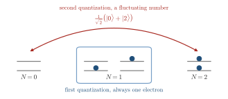

Advanced Quantum Materials 2027 · All lectures · Lecture notes
Session 1. Second Quantization, Mean-Field, and Spontaneous Symmetry Breaking
1.4 Setting up the formalism with the Schrödinger equation in two ways
Every quantum mechanical system is described by the Schrödinger equation, which is built from a Hamiltonian acting on a wave function, where for our purposes we can think of the Hamiltonian as a matrix. If we know the wave function at time zero and the Hamiltonian, in principle we can integrate this equation forward in time and know the state at any later time. This statement is completely general, and it holds both when the wave function describes one particle and when it describes a whole many-body system. In practice, however, the difference is very large. Single-particle problems can always be solved exactly, in every case that is relevant for us. Many-body problems in general cannot, and the difficulty grows very fast with the size of the system, as we will see in a concrete way below. Since most of the quantum matter that we are interested in is truly many-body, we need a systematic way to deal with this difficulty, even if this way is often approximate, and this is what we build in this session.
1.4.1 First quantization
When the electrons can be treated as independent of each other, we can describe the system with a single-particle wave function that lives in an ordinary Hilbert space. This is what is called first quantization, which is the language that you already know from a standard course on quantum mechanics. It is a very capable tool, and it is enough to describe metals, semiconductors, insulators and even topological insulators.
1.4.2 Second quantization
First quantization assumes that the number of particles is fixed, and this assumption fails for a whole class of quantum materials. It fails for any system where the electrons are not independent, and also, which is more surprising, for systems where the number of electrons is itself not fixed. For these systems we need second quantization, which is a formalism that is not built around the question of “how many electrons are present” but around how electrons are created and destroyed. This formalism is essential for superconductors, superfluids and correlated materials in general, and it is what makes phenomena such as spinon fractionalization straightforward to describe at all. Schematic 1.3 shows this difference for a small dot.

Which of these states can we write as an ordinary wave function with a fixed number of coordinates?
Show the answers
- A. ✓ True
This is true. The wave function is \(\psi(x)=a\psi_0(x)+b\psi_1(x)\), and it has one coordinate. The number of electrons is one for both terms.
- B. ✗ False
This is false. The mean number of electrons is \(1\), but one term has no coordinate and the other has two, \(x_1\) and \(x_2\). No single function \(\psi(x_1,x_2)\) describes both terms.
- C. ✗ False
This is false. The mean number of electrons is \(1.5\), which is not a number of coordinates at all. The two terms have zero and three coordinates, so we need second quantization.
A wave function needs a fixed number of coordinates. States that mix different numbers of electrons need second quantization.